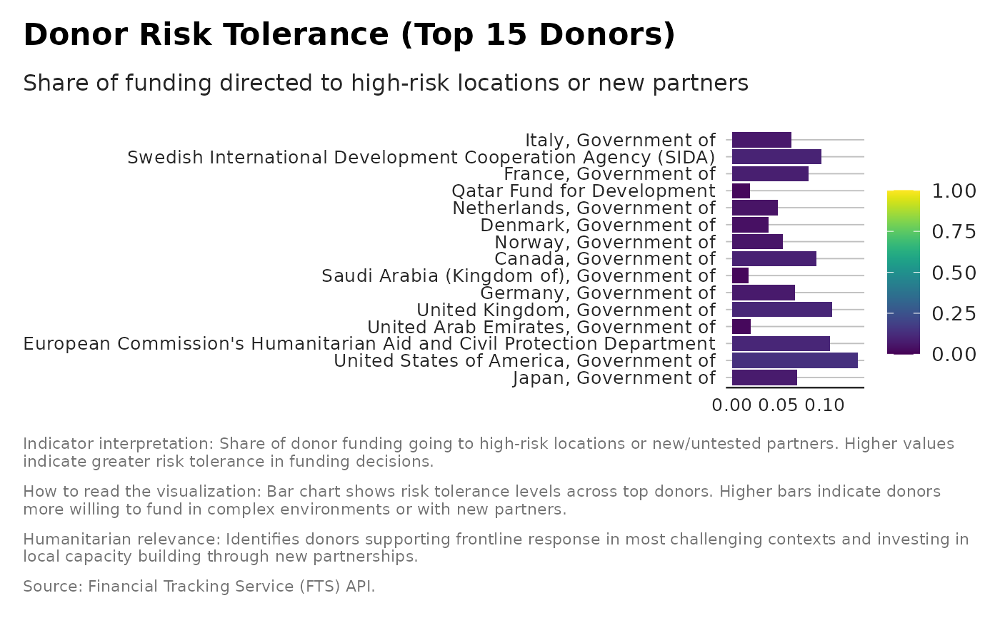

Donor Risk Tolerance
Source:R/indicator_donor_destination_risk_tolerance.R
indicator_donor_destination_risk_tolerance.RdEstimates donor risk tolerance as the share of funding going to:
high-risk locations, and/or
new or untested recipient organisations.
Examples
donor_risk <- indicator_donor_destination_risk_tolerance(
flows,
high_risk_locations = c("Sudan", "South Sudan", "Somalia", "Afghanistan"),
new_partners = c("Local NGO A", "Community Org B")
)
# Identify top 15 donors by total contributions
top15 <- donor_risk |>
dplyr::arrange(desc(total)) |>
dplyr::slice_head(n = 15)
donor_risk_top15 <- donor_risk |>
dplyr::filter(donor %in% top15$donor) |>
dplyr::mutate(
donor = factor(donor, levels = top15$donor)
)
# ---- ggplot2 visualisation (viridis) ----
ggplot2::ggplot(
donor_risk_top15,
ggplot2::aes(
x = donor,
y = Risk_Tolerance,
fill = Risk_Tolerance
)
) +
ggplot2::geom_col() +
viridis::scale_fill_viridis(
name = "Risk Tolerance",
option = "viridis",
direction = 1,
limits = c(0, 1),
na.value = "grey80"
) +
ggplot2::coord_flip() +
ggplot2::labs(
title = "Donor Risk Tolerance (Top 15 Donors)",
subtitle = "Share of funding directed to high-risk locations or new partners",
x = "Donor",
y = "Risk Tolerance (0–1)",
caption = paste(
"Indicator interpretation:",
"Share of donor funding going to high-risk locations or new/untested partners.
Higher values indicate greater risk tolerance in funding decisions.", "\n\n",
"How to read the visualization:",
"Bar chart shows risk tolerance levels across top donors. Higher bars
indicate donors more willing to fund in complex environments or with new
partners.", "\n\n",
"Humanitarian relevance:",
"Identifies donors supporting frontline response in most challenging
contexts and investing in local capacity building through new partnerships.",
"\n\n",
"Source: Financial Tracking Service (FTS) API."
)
) +
unhcrthemes::theme_unhcr(grid = "Y", axis = "X", axis_title = FALSE) +
ggplot2::theme(
panel.grid.minor = ggplot2::element_blank(),
legend.position = "right"
)
